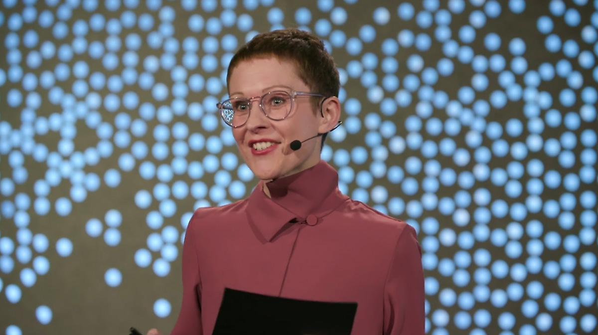

Une auteure et artiste reconnue à l'internationnale

,Elle est co-auteure de plusieurs ouvrages de référence, notamment Dear Data
,une exploration visuelle des détails de la vie quotidienne réalisée avec
Stefanie Posavec et Observe, Collect, Draw!, un journal guidé pour
.la collecte de données visuelles
,Ses créations ont été publiées dans des médias tels que The New York Times
The New Yorker, The Guardian, et exposées dans des institutions
,prestigieuses comme le Museum of Modern Art (MoMA)
.où certaines de ses œuvres font partie de la collection permanente
Conférencière inspirante, son TED TalkTED Talk sur l ’approche humaniste des données
a été visionné plus d’ un million de fois. Elle a également collaboré avec des
organisations internationales comme Google, IBM, le Getty Museum
et la Fondation Bill & Melinda Gates, et a conçu des projets visant à sensibiliser
.à des enjeux mondiaux pour l’ OMS et les Nations Unies
Lauréate du National Design Award 2022 du Cooper Hewitt Smithsonian Design Museum,
Giorgia Lupi a aussi reçu un doctorat honorifique en beaux-arts du MICA.
Elle est membre du Global Future Council on New Metrics du Forum économique mondial
et de la Royal Society of Arts (RSA).
